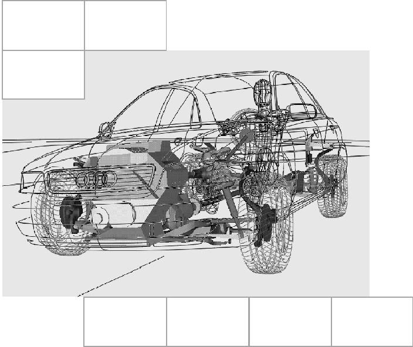
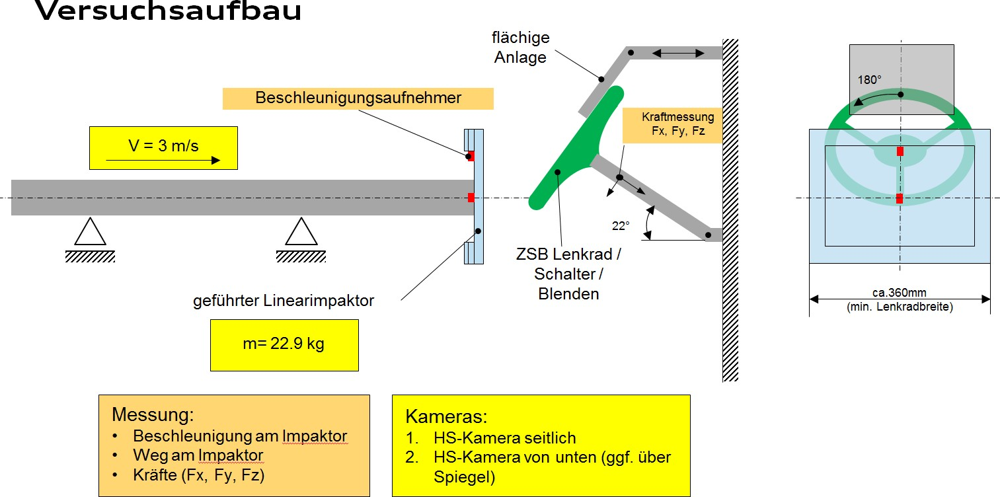
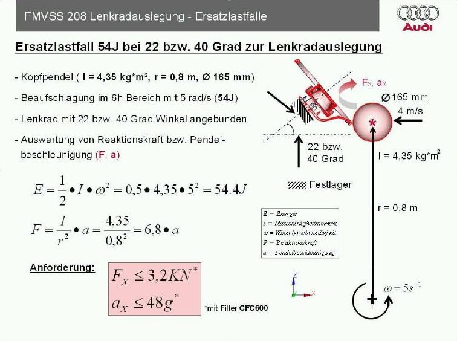
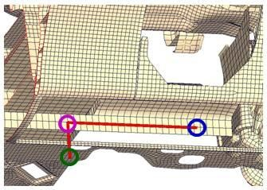
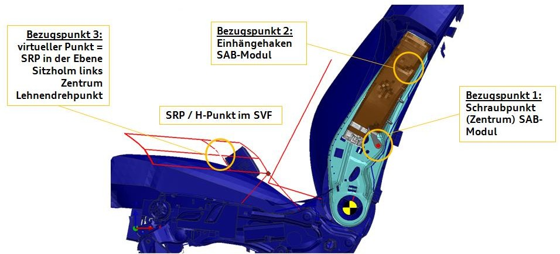
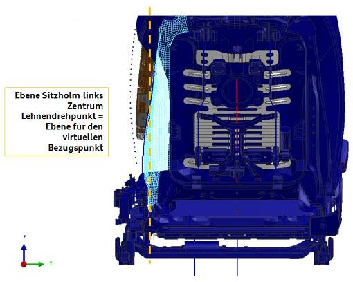

[redacted-person] Lastenheft LAH.DUM.880.FB

[redacted]Komponente LAH.DUM.880.FB
[redacted]
[redacted-phone]
[redacted-phone]
[redacted-person] / OE
Hausruf [redacted-phone]
Telefax [redacted]
[redacted-co]
D[redacted]
Verteiler
Änderungsdokumentation
Inhaltsverzeichnis
[redacted-person] 6Dateiname 6Nummerierungskonvention 6Parametrisierung 6[redacted-person] 8Positionierung mit Transformkarte 8Gasgeneratoren 8Kunststoffmaterial 9Lenkrad 9Kopfairbag-Halter 9Sleeve 9Validation 9[redacted-person] 10Insassenschutzfähigkeit 10[redacted-person] im Entwicklungsfortschritt für RHS-[redacted-person] 10Out of Position 11Beifahrerairbag 11Validation 11Integrität 13Spritzguss-Simulationsmodell 13[redacted-person] 13[redacted-person] und Halter 13[redacted-person] 13[redacted-person] 14[redacted-person] 14Anbindungen 14[redacted-person] Modul in Fahrzeugumgebung 15Lenkrad 15Validierung im 6 [redacted-person] 15Validierung 9 Uhr und 12 Uhr 16[redacted-person] 17[redacted-person] 17Dachhimmel und Säulen 17Sitz 18[redacted-person] 18Lastenhefte 19
Vorwort
[redacted-person] beinhaltet die folgenden Themengebiete [BAK-LAH-001]:
[redacted-person]
Out of Position (OoP)
Integrität
[redacted-person] Modul in Fahrzeugumgebung
[redacted-person] ist Fahrzeug unabhängig formuliert [BAK-LAH-002]. Fahrzeug spezifische Anforderungen sind im Bauteillastenheft enthalten [BAK-LAH-003].
[redacted-person] (BT-LAH) verweist auf das [redacted-person] Komponente (BAK-LAH) und legt den geltenden Umfang fest (Beispiel: [redacted-person] nutzt nur die [redacted-person]- rerairbag im Berechnungslastenheft) [BAK-LAH-004].
Das vorliegende Berechnungs-Lastenheft (BAK-LAH) ist angelehnt an die Struktur des VDA- [redacted-person] 2 (www.vda-qmc.de) und beschreibt komponentenspezifische Anforde- rungen. Das VDA-Modul 1 wird durch die [redacted-co]99000 abgebildet und beschreibt komponentenübergreifende allgemeine Anforderungen zur Leistungsbringung im Rahmen der Bauteilentwicklung [BAK-LAH-005].
Anforderungen und Informationen sind im [redacted-person] Komponente BAK-LAH zum bes- seren Verständnis mit einer Identifikationsnummer gekennzeichnet. [redacted-person] in diesem BAK-LAH lauten BAK-LAH-001 bis BAK-LAH-999 [BAK-LAH-006].
[redacted-person] stellt die [redacted-co] Tools zur Verfügung, die bei der Einhaltung der Richtlinien und beim Durch- führen der Berechnungsprozesse helfen. [redacted-person] dürfen nur für Projekte im VW-Konzern angewendet werden [BAK-LAH-007].
Mit der Vergabe dieses Lastenheftes verpflichtet sich der Auftragnehmer, alle beschriebenen Konventionen und Arbeitsabläufe inkl. der mitgelieferten Präsentationen einzuhalten. Sollten sich im [redacted-person]- rungen bzgl. Prozess und Methode ergeben, wird der Auftragnehmer durch die Fachabteilung informiert [BAK-LAH-008].
Sollte durch Nichtbeachtung des [redacted-person] entstehen, behält sich der Auftraggeber das Recht vor, einen Dritten zu beauftragen, um diesen Mehraufwand zu Lasten des Auftragnehmers auszuglei- chen. Inhalte dieses Lastenheftes und der zugehörigen Dokumente dürfen Dritten ohne ausdrückliche Ge- nehmigung durch den Auftraggeber nicht zugänglich gemacht werden [BAK-LAH-009].
[redacted-person] muss dieses Lastenheft in vollem Umfang bei seiner Angebotsgestaltung berücksichtigen. In seinem Angebot hat er sämtliche Leistungen zu berücksichtigen, die zur Erfüllung der Forderungen aus dem Lastenheft erforderlich sind [BAK-LAH-010].
[redacted-person] behält sich vor, den Entwicklungsvertrag/-auftrag jederzeit ganz oder teilweise zu kündi- gen, wobei der [redacted-person] für die bis zur Kündigung erbrachten Leistungen bleibt. Es werden nur die bis zum Zeitpunkt der Kündigung tatsächlich angefallenen und nachgewiesenen Kosten ersetzt, weitere Ansprüche gegenüber dem Auftraggeber bestehen im Fall der Kündigung nicht. Maximal werden jedoch die als Vergütung verhandelten Beträge ersetzt [BAK-LAH-011].
[redacted-person] ist eine Ergänzung zum [redacted]Insassenschutz. Es beschreibt die zusätzlichen Anforderungen, welche es ermöglichen, das Modell ohne weitere Anpassungen im Prozess innerhalb der [redacted-co] zu nutzen.
Im Weiteren sind unter dem [redacted-person] Modelle für Out of [redacted-person] und Integritätssimulationen, sowie Detailuntersuchungen zur Entfaltungsthematiken zusammengefasst.
Includes sind nach der unten beschriebenen Namenskonvention zu benennen [BAK-LAH-012]. [redacted-person]- Includenamen setzen sich dabei aus Airbagtyp, Region, Position, Teilenummer, [redacted-person], Validierungsstand, [redacted-person] und [redacted-co] zusammen. Insgesamt sind maximal 67 Zeichen zu vergeben, um inklusive Dateiendung .inc und INCLU / - Karte die maximal möglichen 80 Zeichen von PamCrash abzudecken [BAK-LAH-013].
$ + 1 + 2 + 3 + 4 + 5 + 6 + 7 + 8
airbag_dab US_1_1K0_880_241_BC_03S_001_vF00_v00 .inc
|
| |
|
| | | |
|
|---|---|---|---|---|---|
|
| |
|
| | | |
|
|
| |
|
| |
|
|
|
| |
|
| |
|
|
|
| | | |
|
|-> 22-35: |
|
|
| | |-> Spalte 20: Position (1-9)
| |-> Spalte 17-18: Region (EU, US)
|-> Spalte 1-11: Includename (dab, pab, knab, sab, hab)
|
|
|---|---|
|
|
|
|
|
|
| [redacted-person] |
|
| [redacted-person] |
|
|
|
Es gilt die Konzern-Nummerierungskonvention LAH.DUM.880.DL [BAK-LAH-014]. Ergänzend zu dieser Nummerierungskonvention gilt für Komponentensimulationsmodelle für die Part-ID, Node-ID und Element-ID eine erweiterte Nummerierungskonvention, welche im Anhang 1 zu finden ist [BAK-LAH-015].
In einem Airbagsimulationsmodell sind für den Insassenschutz folgende Parameter zwingend erforderlich
[BAK-LAH-016]:
Zündzeit (TTF)
Ventgröße
Gasgenerator-Auswahl
Falls eine Adaptivität vorhanden ist, muss noch das Delta zwischen [redacted-person] und Zündung der Adaptivität parametrisiert werden [BAK-LAH-017]. Falls möglich muss auch die Fläche der Adaptivität para- metrisiert werden [BAK-LAH-018].
[redacted-person] müssen durch einzelne PYVARs für die Nutzung in der Datenbank der [redacted]wie im Beispiel beschrieben werden [BAK-LAH-019]. [redacted-person] bestehen aus 6 Buchstaben [BAK-LAH-020]:
|
|
|
|---|---|---|
|
|
|
|
|
|
|
|
|
|
|
|
|
|
|
|
Beispiel PYVAR:
$ ID
PYVAR / 7000001
NAME [redacted-person] Dx_TTF = 12.
END_PYVAR
$
$ ID
PYVAR / 7000002
NAME [redacted-person] DxDPV1 = 30
END_PYVAR
|
|
|---|---|
| [redacted-person] |
|
|
|
|
|
|
|
|
|
Für unterschiedliche Durchmesser des permanenten Vents sind diese durchzunummerieren (z.[redacted-person]1, DxDPV2, …) [BAK-LAH-021].
[redacted-person] müssen im Airbagmodell für die Nutzung in der Datenbank der [redacted-co] definiert sein
[BAK-LAH-022]:
In dieser Gruppe müssen die Part-IDs stehen, über welche der Airbag an das Fahrzeug angebunden werden soll. Dies sollen Nullshell/bar Part-IDs sein, die nur die anzubindenden Knoten enthalten.
In dieser Gruppe müssen die Part-ID des Airbags stehen, mit denen er mit der Fahrzeugumgebung in Kontakt (PamCrash Kontakt 34) kommen kann.
[redacted-person] kann optional definiert werden, falls es notwendig ist für eine bessere Entfaltung einen PamCrash Kontakt 43 zwischen Airbag und Fahrzeugumgebung zu definieren.
Der Includename.Position besteht aus den ersten 15 Buchstaben des Includenamens und der Position im Fahrzeug (1-9, Sitzposition im Fahrzeug nummeriert von vorne rechts nach hinten links).
[redacted-person]
$
GROUP / 'Tsl:airbag_dab .1' PART [redacted-phone] END
Airbagsimulationsmodelle werden mittels affiner Abbildung in den jeweiligen Fahrzeugbauraum transformiert. Dadurch wird eine einfache Positionierung der Airbagmodule in verschiedenen Fahrzeugen ermöglicht [BAK- LAH-023].
Die affine Abbildung muss über eine Transformkarte (TRSFM-Karte) definiert werden, indem 3 Ursprungs- knoten des Airbagmoduls und 3 parametrisierte Zielknoten (z.[redacted-person] Cockpit) angegeben werden. Die detail- lierte Definition der Ursprungs- und Zielknoten für alle Airbagmodule ist im Anhang 2 beschrieben [BAK-LAH- 024].
[redacted-person] muss nach Absprache mit der Fachabteilung mit der FPM Option 11 rechenfähig sein. Hierzu sind folgende Angaben qualifiziert zu hinterlegen [BAK-LAH-025]:
Ausströmfläche am Gasgenerator-Umfang, die mit Überschall durchströmt wird
Ausströmfläche am Gasgenerator-Umfang, die mit Unterschall durchströmt wird
Massenstrom über der Ausströmfläche, die mit Überschall durchströmt wird
Massenstrom über der Ausströmfläche, die mit Unterschall durchströmt wird
Totaltemperatur des Gases, getrennt für die beiden Ausströmgebiete
Zusammensetzung des Gases, getrennt für die beiden Ausströmgebiete
Machzahl des Gases, getrennt für die beiden Ausströmgebiete
Quergeschwindigkeitskomponenten des Gases in den Ausströmelementen, definiert in einem Ele- mentkoordinatensystem
[redacted-person] der Input-Daten sind vorgeschaltete, entkoppelte Strömungssimulation durchzuführen. [redacted-person] des Rechenmodells sowie die gesetzten Randbedingungen sind im Vorfeld der Simulation mit der Fachabteilung abzustimmen [BAK-LAH-026].
[redacted-person], welche für die OoP- und Integritätssimulation in der Front verwendet werden, sind in Vorversuchen bei -35 Grad, Raumtemperatur und +85 [redacted-person] zu ermitteln und zu validieren Dynami- sche Zugversuche bei unterschiedlichen Dehnraten bilden hierbei die Basis [BAK-LAH-027].
[redacted-person] muss für die Integritätsberechnungen das Materialversagen mit abbilden, dabei muss der Einfluss der Lackschicht ebenfalls berücksichtigt werden [BAK-LAH-028].
Für die Insassenschutz und OoP Simulation muss ein verformbares Lenkradmodell geliefert werden [BAK- LAH-029]. Hierbei muss das Skelett und die Blende durch Shell-Elemente und der Schaum durch Solid- Elemente abgebildet werden [BAK-LAH-030]. [redacted-person] muss die Zeitschrittvorgaben der Insassenschutz und der OoP Simulation erfüllen [BAK-LAH-031].
[redacted-person] muss anhand von Impaktorversuchen im Bereich 6 Uhr, 9 Uhr und 12 Uhr validiert sein [BAK- LAH-032]. Dabei ist für den Bereich 6 Uhr die in Abschnitt „Validierung im 6 [redacted-person]“ definierte Konfigu- ration zu verwenden und für 9 Uhr und 12 Uhr die in Abschnitt „Validierung 9 Uhr und 12 Uhr“ definierte Kon- figuration. [redacted-person] der Impaktorversuche müssen dem Belastungsspektrum der Insassenschutz und den Out of [redacted-person] entsprechen [BAK-LAH-033].
Bei den Kopfairbag-Haltern handelt es sich um ein funktionelles Bauelement. Diese müssen im Modell grundsätzlich mit enthalten sein. [redacted-person] des Versagens der Halter während des Entfaltungsvorgan- ges erfolgt durch eine Validation auf ein Kraftniveau [BAK-LAH-034].
[redacted-person] (die den Airbag umgebende Gewebehülle) handelt es sich um ein funktionelles Bauelement. Dieses muss, insofern in Hardware vorhanden, auch im Modell existent sein. [redacted-person] des Versagens der Sleeve-Reissnaht während des Entfaltungsvorganges erfolgt durch eine Validation auf ein Kraftniveau. [redacted-person] des funktionellen Verhaltens unter Zuhilfenahme eines zeitgesteuerten Kontaktes ist nicht zulässig [BAK-LAH-035].
Wird die Entfaltungskinematik unzureichend wiedergegeben, sind tiefergreifende Verfahren anzuwenden, wie z.[redacted-person] Hilfe eines Entfaltungsversuchs des Airbags, wobei der Luftsack durch einen vorgeschalteten Printprozess ein definiertes, zufälliges Punktemuster aufgedruckt bekommt, sind die Luftsackausbreitungs- geschwindigkeiten räumlich und zeitlich aufgelöst zu messen (z.[redacted-person] dem IPCT-Verfahren des DLR Göt- tingen) und die Simulationsergebnisse zur Entfaltung des Luftsacks darauf abzugleichen. Für die Messung sind drei Hochgeschwindigkeitskameras mit 10.000 Bildern pro Sekunde und einer Belichtungszeit von klei- ner 10 µs auf den Luftsack auszurichten oder ein FMCW-Radarscan [BAK-LAH-036].
[redacted-person] muss vor und nach der Narbung in einer CT-Untersuchung vermessen und der Splitline- Dickenverlauf gegenüber den Daten des Simulationsmodells abgeglichen werden [BAK-LAH-037].
[redacted-person] eines Simulationsmodells stellt eine Übersicht über die Modellhistorie dar. Zu Projektbeginn wird vom Auftraggeber der Lebenslauf im Excel-Format übergeben. Er ist vom Lieferanten bei jeder Modell- übergabe ausgefüllt in Excel-Format mitzuschicken [BAK-LAH-038].
[redacted-person] des Airbag-Simulationsmodells muss durch Einbau in ein Beispiel- oder Fahrzeugmodell nachgewiesen werden. [redacted-person]- oder Fahrzeugmodell wird von der Fachabteilung zu Beginn des Pro- jektes zur Verfügung gestellt [BAK-LAH-039].
[redacted-person] der Parametrisierung muss durch Simulationen bei Zündzeiten von 0 ms, 20 [redacted-person] 40 [redacted-person] [BAK-LAH-040].
[redacted-person] gilt für die Modelle von Fahrerairbag, Beifahrerairbag und Knieairbag.
Am Anfang der RHS-Entwicklung ist die Änderungsrate im Simulationsmodell noch sehr groß. Bis das Shape gefunden ist und die Fangbänder und Vents an der richtigen Position sind, müssen meist einige Schleifen durchlaufen werden. In dieser Zeit ist es sinnvoll, ein schnell rechnendes und leicht modifizierbares Modell für die Insassensimulation zu verwenden. Ab einem im Projekt zu definierendem Zeitpunkt wird das „normale vollwertige“ Modell eingesetzt.
Anforderungen an das schnell rechnende und leicht modifizierbare Modell:
In diesem Modell soll auf FPM verzichtet werden. Es soll grundsätzlich ein vollwertiges Modell entsprechend [redacted-co]82036 und [redacted-prj] LAH.DUM.880.FB aufgebaut werden, jedoch soll in Absprache mit der Fachabteilung auf rechenzeitkritsche und sehr modellierungsaufwendige Optionen verzichtet werden. [redacted-person] für ein entsprechendes Modell ohne Umgebung darf 2 h nicht überschreiten (120ms auf 24 Pro- zessoren, sp). Ab einer im Projekt beschlossenen Änderung am Airbag, darf die Aktualisierungsschleife (Modellaktualisierung, Hardwareaufbau, Impaktorversuche, Validierung) 3 Wochen benötigen. Versuch und Simulation beim Airbaglieferanten müssen sich abstimmen, um den Zeitplan einhalten zu können.
Die im Folgenden beschriebenen Umfänge sind nur für Front-Airbagkomponenten innerhalb von NAR- Projekten zu berücksichtigen [BAK-LAH-041].
[redacted-person] sind Prognose-Simulationen durchzuführen, anhand derer geprüft wird, ob die angege- benen Grenzwerte erfüllt werden [BAK-LAH-042]. Ggf. sind in Absprache mit der [redacted-person]- rungsmaßnahmen an Airbag und Umgebung vorzuschlagen und anhand weiterer Simulationen zu untersuchen [BAK-LAH-043]. [redacted-person] sind zur B-Freigabe, zur Baumusterfreigabe und bei späte- ren Änderungen zu erbringen [BAK-LAH-044].
[redacted-person] der Hardwareversuche sind für jeden Lastfall die Worst-[redacted-person] durch Variati- on von Dummy- und Sitzpositionen zu identifizieren und dem Auftraggeber zu melden [BAK-LAH-045]. [redacted-person] der Parametervariation sind zu dokumentieren und die Identifikation der Worst-[redacted-person]- on grafisch zu belegen [BAK-LAH-046].
Sollten keine Versuche vorliegen, muss der Dummy nach der Einsitz- und Positionierungsrichtlinie der FMVSS 208 positioniert werden [BAK-LAH-047].
Die OoP-Simulationen beinhalten ein vollständiges [redacted-person] mit Aufreißfunktion, das vom Cockpitliefe- ranten bzw. der [redacted-co] zur Verfügung gestellt wird [BAK-LAH-048].
In der folgenden Tabelle werden die Verantwortlichkeiten zusammengefasst [BAK-LAH-049]:
|
|
|
|---|---|---|
|
|
|
| [redacted-person] |
|
|
|
|
|
Das genaue Vorgehen der Validation des Airbagmodells für OoP wird in Absprache mit der Fachabteilung definiert. [redacted-person] müssen an die Fachabteilung übergeben werden [BAK-LAH-050].
Das OoP-Gesamtmodell gilt als validiert, wenn die zeitliche Entfaltung des Airbags, das Öffnungsverhalten der Lenkradkappe bzw. der Instrumententafel, die Kinematik des Dummys und der relevanten Umgebungs- bauteile, sowie der zeitliche Verlauf der maßgeblichen Dummywerte übereinstimmen [BAK-LAH-051].
[redacted-person] der Positionierung der Dummys in den OoP-Lastfällen ist mit Hilfe von Abtastdaten zu über- prüfen. [redacted-person] sind dem Auftraggeber in digitaler Form im Fahrzeugkoordinatensystem zur Verfü- gung zu stellen. [redacted-person] ist mit dem Auftraggeber abzustimmen [BAK-LAH-052].
Hierbei müssen mindestens folgende Positionen auf der Beifahrerseite aufgenommen werden [BAK-LAH- 053]:
COG des Dummmy-Kopfes
Kopfwinkel
H-Punkt (6yr Dummy) bzw. Hüftdrehgelenk (3yr Dummy)
Kniegelenk
Rückenwinkel
Sitzanschraubpunkte
Sitzflächenneigung
I-[redacted-person]
Dummy-Steh-Stütze
Auf der Fahrerseite sind folgende Positionen abzuprüfen:
COG des Dummy-Kopfes
H-[redacted-person]
Kopfwinkel
Rückenwinkel
Lenksäulenwinkel
Lenkradwinkel
Lenkradposition
[redacted-person] Lenkradkranz unten (waagrecht)
[redacted-person] Durchtrittspunkt (waagrecht)
[redacted-person] betrifft die Airbagkomponenten der Front [BAK-LAH-054].
[redacted-person] muss während der Entwicklung des [redacted-person] im Temperaturbereich - 35 Grad, Raumtemperatur und +85 [redacted-person] treffen und damit die Entwicklung aktiv unterstützen [BAK- LAH-055].
[redacted-person] sind den Komponentenentwicklern des Konzerns projektbegleitend vorzustellen. Zur B- Freigabe muss eine vollständige Dokumentation der durchgeführten Simulationen an die [redacted-person]- lung übergeben werden [BAK-LAH-056].
Änderungen in der Hardware, welche nach der B-Freigabe eingebracht werden, müssen im Simulationsmo- dell aktualisiert werden [BAK-LAH-057].
Die für diese Prognosen verwendete Methodik ist zu Beginn des Projekts der Fachabteilung vorzustellen und abzustimmen. [redacted-person] müssen alle Komponentenmodelle an die Fachabteilung übergeben werden [BAK-LAH-058].
In den folgenden Unterkapiteln dieses Abschnitts werden Komponentensimulationen zu unterschiedlichen Bauteilen gefordert. Diese sind gültig, wenn die Bauteile im Airbag-Modul vorhanden sind [BAK-LAH-059].
[redacted-person] der Modulintegrität muss den Fertigungseinfluss über eine Simulation des Spritzgusspro- zesses berücksichtigen. Hierzu ist der Herstellprozesses mit allen notwendigen Randbedingungen abzubil- den. [redacted-person] des Rechenmodells sowie die eingesetzte Methodik ist zu Projektbeginn mit der Fachabteilung abzustimmen [BAK-LAH-060].
[redacted-person] einer Spritzguss-Simulation an Modulgehäusen bzw. Kappen aus Kunststoff ist durch Ab- gleich der Position von Bindenähten, Zusammenflussstellen sowie sonstigen, fertigungstechnisch bedingten Schwachstellen durch Aussetzen des Bauteils in einem Glykolbad zu erbringen [BAK-LAH-061].
Bei glasfaserverstärkten Materialien ist zusätzlich die Faserausrichtung zu berechnen und darzustellen
[BAK-LAH-062].
Für das Gehäuse muss mittels geeigneter Simulation eine Bewertung der Festigkeit und der Materialeignung getroffen werden [BAK-LAH-063]. Desweiteren muss das Gehäuse bezüglich der Aufweitung bei Airbagaus- lösung, wie im Bauteillastenheft beschrieben, optimiert werden [BAK-LAH-064].
[redacted-person] und Halter, welche zum Airbagmodul gehören, müssen mittels geeigneter Simulation vorausge- legt werden. Hierbei muss eine Aussage über die Materialeignung und die Festigkeit getroffen werden [BAK- LAH-065]. Dies beinhaltet auch das Versagen der Klipse und Halter [BAK-LAH-066].
[redacted-person] der Öffnungsfunktion der Airbagkappe bei Airbagauslösung ist eine Simulation der Öff- nungsfunktion über dem geforderten Temperaturbereich erforderlich [BAK-LAH-067]. [redacted-person]
erfordern dehnratenabhängige Materialdaten mit Versagen, wie in Kapitel 1.7 beschrieben, um eine Aussage über die Materialeignung und Design zu treffen [BAK-LAH-068].
Mit diesem Modell muss die Aufreißlinie ausgelegt und die optimale Kappen-Teilung ermittelt werden [BAK- LAH-069]. Weiterhin sollen eine Aussage zur Festigkeit und Steifigkeit der Airbagkappe (Fingerpoke) getrof- fen werden [BAK-LAH-070].
[redacted-person] der Entfaltung des Luftsack muss eine Aussage über die Festigkeit getroffen und Span- nungs- bzw. Dehnungsspitzen im Luftsack vermieden werden [BAK-LAH-071].
[redacted-person] des Moduls muss dazu genutzt werden, um Aussagen zu den folgenden Punkten zu erzeugen [BAK-LAH-072]:
[redacted-person] bei -35 Grad, womit die Anforderungen an Aufblaszeiten noch erfüllt werden
[redacted-person] bei +85 Grad, womit das System nicht versagt
[redacted-person], Airbaggehäuse, Airbagkappe und Faltung
[redacted-person] ([redacted-person], Vent, Luftsackshape)
[redacted-person] zwischen Kappe und Gehäuse sowie anderer Anbauteile ist mittels geeigneter Simulationen,
z. [redacted-person], zu optimieren [BAK-LAH-073].
[redacted-person] des Fahrer-Airbagmoduls zum Lenkrad muss bezüglich Montage, Schock und Vibration optimiert werden [BAK-LAH-074].
[redacted-person] des Moduls muss die Integration seiner Komponente in die Fahrzeugumgebung aktiv unter- stützen und hierfür geeignete Modelle zur Verfügung stellen. [redacted-person] an diese Modelle sind in den folgenden Abschnitten beschrieben [BAK-LAH-075].
[redacted-person] des Lenkrads ist so auszulegen, dass alle gesetzlichen und Verbraucherschutz- Anforderungen erfüllt werden [BAK-LAH-076].
Für die Simulation ist ein detailliertes Modell des Skeletts zu erstellen. [redacted-person] des Modells richtet sich nach der Dicke der Speichen. Die minimale Elementgröße ist so zu wählen, dass über die Speichendicke mindestens 3 Hexa-Elemente angeordnet sind. Die restlichen Bereiche sind entsprechend dieser kleinsten charakteristischen Kantenlänge zu diskretisieren [BAK-LAH-077].
[redacted-person] bis zum Erreichen eines i.[redacted-person] sind vorzuse- hen. Zeitgleich sind für den gefundenen Designstand die Festigkeits-, Steifigkeits- und Schwingungskomfort- anforderungen einzuhalten [BAK-LAH-078].
Zusätzlich zu den Festigkeits- / Steifigkeitsanforderungen und den Anforderungen der Insassenschutz- systementwicklung sind bei o.[redacted-person] folgende Punkte zu beachten:
[redacted-person] anderer Abteilungen bzgl. Bodyblock, Kopfaufschlag etc. ([redacted-person]
LAH.DUM.419.A) sind zu prüfen [BAK-LAH-079].
Über eine geeignete Prüfung (Druckversuch quasistatisch bzw. dynamisch, etc.) und Simulation ist der Nachweis zu führen, dass das Deformationsverhalten der Lenkradvarianten dem des Standardlenkrads ent- spricht bzw. die Rückhaltewirkung nicht negativ beeinflusst wird [BAK-LAH-080].
[redacted-person] in dem Bereich 6 Uhr ist über Simulation und entsprechende Impaktorversuche zu führen [BAK-LAH-081]. [redacted-person] vom Versuchsaufbau wird dabei von [redacted-co] zur Verfügung gestellt.
[redacted-person]-Simulationsmodell muss anhand des unten beschriebenen Impaktor-Versuchs validiert werden
[BAK-LAH-082]. Für die Validierung gilt dabei:
Beschleunigung-Zeit vom Impaktor (gemessen mit Beschleunigungsaufnehmer und gefiltert mit CFC60) muss nach der CORA361 Standard-Methode mindestens mit 0,9 bewertet werden
[redacted-person]-File für die Cora-Bewertung wird von der [redacted-co] Fachabteilung zur Verfügung gestellt [redacted-person] für den Impaktor-Versuch werden nachfolgend beschrieben.


[redacted-person] in dem Bereich 9 Uhr und 12 Uhr ist über Simulation und entsprechende Kopfpen- delversuche zu führen. [redacted-person] werden nachfolgend beschrieben [BAK-LAH-083]:
[redacted-person] des Aufreißverhaltens des Beifahrerairbags ist der Airbag in ein [redacted-person] einzubauen. [redacted-person] Modell wird von der Fachabteilung zur Verfügung gestellt [BAK-LAH-084].
[redacted-person] des Airbagschusses wird mit FPM durchgeführt. [redacted-person] kann identisch zum OoP Mo- dell sein. [redacted-person] ist jedoch durch ein Mittelflächenmodell darzustellen, welches die Aufweitung wäh- rend des Öffnungsverhaltens abbildet. [redacted-person] ist anhand von detaillierten Simulationen (Komponentensimulation) oder Versuchen zu validieren. [redacted-person] und die Validation sind zu dokumentie- ren und der Fachabteilung zu übergeben [BAK-LAH-085].
[redacted-person] von Standversuchen müssen die zeitliche Entfaltung des Airbags, die Coveröffnung, der Druckver- lauf und die Rückstosskräfte an den Aufnahmen des Airbags bestimmt werden. [redacted-person] dieser Ergebnisse muss das Simulationsmodell validiert werden [BAK-LAH-086].
[redacted-person] muss Gasgeneratordaten UGL, nominal und OGL, sowie für [redacted-person] bei -35 Grad, Raumtemperatur und +85 [redacted-person] beinhalten [BAK-LAH-087].
Mit diesem validierten Modell sind Gasgeneratorcharakteristik, Airbaggehäuse und Faltung im Temperatur- band -35 Grad, Raumtemperatur und +85 [redacted-person] zu optimieren [BAK-LAH-088].
[redacted-person] der Halterung des Knieairbags muss ein Modell vom Komponentenlieferant bereitgestellt werden [BAK-LAH-089].
[redacted-person] des Airbagschusses wird mit FPM durchgeführt. [redacted-person] kann identisch zum Insassen- schutz Modell sein. [redacted-person] ist jedoch durch ein [redacted-person] darzustellen, welches die Aufwei- tung während des Öffnungsverhaltens abbildet. [redacted-person] ist anhand von detaillierten Simulationen (Komponentensimulation) oder Versuchen zu validieren. [redacted-person] und die Validation sind zu dokumentie- ren und der Fachabteilung zu übergeben [BAK-LAH-090].
[redacted-person] von Standversuchen müssen die zeitliche Entfaltung des Airbags, die Coveröffnung, der Druckver- lauf und die Rückstosskräfte an den Aufnahmen des Airbags bestimmt werden. [redacted-person] dieser Ergebnisse müssen die Simulationsmodelle validiert werden [BAK-LAH-091].
[redacted-person] muss OGL Gasgeneratordaten beinhalten [BAK-LAH-092].
Säulenverkleidungen, Dachrahmenverkleidungen, Himmel und Haltegriffe beeinflussen die Entfaltung des Kopfairbags. Dies schließt auch Kabelkanäle und Türkeder ein. [redacted-person] dieser Bauteile, im folgenden Greenhouse genannt, werden von der Fachabteilung zur Verfügung gestellt [BAK-LAH-093].
Sobald ein entsprechendes Greenhousemodell zur Verfügung steht, ist vom Auftragnehmer der Entfaltungs- prozess in der Simulation darzustellen und auf Standversuche zu validieren [BAK-LAH-094].
Dabei ist unter anderem das Öffnen des Greenhouses in Zusammenarbeit mit dem Auftraggeber und dem Systementwicklungspartner darzustellen [BAK-LAH-095]. Dies hat vorzugsweise mit FPM-Modellen zu ge- schehen, in Ausnahmefällen sind in Absprache mit der Fachabteilung auch UP-Modelle möglich [BAK-LAH- 096]. Sollte die Entfaltungskinematik in der Simulation den Stand der Hardware-Versuche unzureichend widerspiegeln, sind entsprechende Maßnahme vorzunehmen [BAK-LAH-097].
[redacted-person] trägt die Gesamtverantwortung für die Positionierung des Airbags in der Simulation [BAK- LAH-098].
[redacted-person] und alle dazu gehörenden Teile wie Innensack, Bezug, Polsterung usw. beeinflussen die Entfaltung des Seitenairbags. [redacted-person] dieser Bauteile, im folgenden Sitz genannt, werden von der Fachabteilung zur Verfügung gestellt [BAK-LAH-099].
Sobald ein entsprechendes Sitzmodell zur Verfügung steht (dies wird vom Auftraggeber bzw. dem Kompo- nentenlieferant Sitz zur Verfügung gestellt), ist vom Auftragsnehmer der Entfaltungsprozess in der Simulati- on darzustellen und auf vom [redacted-person] durchgeführte Standversuche zu validieren [BAK- LAH-100].
Dabei ist unter anderem das Aufreißen des Sitzes ([redacted-person]-Airbag, Reißnaht, einreißen der Schäume usw.) in Zusammenarbeit mit dem Auftraggeber und dem Systementwicklungspartner darzustellen [BAK-LAH-101]. Dies hat vorzugsweise mit FPM-Modellen zu geschehen, in Ausnahmefällen sind in Ab- sprache mit der Fachabteilung auch UP-Modelle möglich [BAK-LAH-102]. Sollte die Entfaltungskinematik in der Simulation den Stand der Hardware-Versuche unzureichend widerspiegeln, sind entsprechende Maß- nahme vorzunehmen [BAK-LAH-103].
[redacted-person] trägt die Gesamtverantwortung für die Positionierung in der Simulation [BR-LAH-055]. Sobald aktualisierte Sitzmodelle bzw. grundlegende Änderung in der Hardware vorliegen, sind die Validie- rungen mit dem entsprechenden Stand zu wiederholen [BAK-LAH-104].
[redacted-person] muss ein geeignetes Modell zur Auslegung sonstiger Fahrzeugbauteile zur Ver- fügung gestellt werden, wenn das Modul dieses Fahrzeugbauteil während seiner Entfaltung beeinflusst [BAK-LAH-105]. Hierbei ist sicherzustellen, dass alle relevanten Fahrzeugbauteile, wie z.[redacted-person], Kabel- kanäle, im Modell enthalten sind [BAK-LAH-106].
[redacted-person] des zu liefernden Modells, sowie der Liefertermin, ist mit der Konzernfachabteilung zu Beginn des Projekts abzustimmen [BAK-LAH-107].
Bei den im Folgenden aufgeführten Lastenheften gilt als aktueller Stand derjenige Änderungsstand, mit dem die Lastenhefte zum Zeitpunkt der Angebotsabgabe in KVS archiviert sind. Sofern ein Angebot überarbeitet und nachgereicht wird, sind wiederum die dann archivierten Lastenheftstände zu berücksichtigen.
Die folgenden Lastenhefte sind zusätzlich zu berücksichtigen:
[redacted]Insassenschutz LAH.DUM.880.EM
[redacted-prj] Nummerierungskonvention LAH.DUM.880.DL
Modellierungsrichtlinien für Airbagmodelle, [redacted]82036
Abkürzungsverzeichnis
|
|
|---|---|
|
|
|
|
|
|
Anhang 1 – [redacted-person]
|
||||
|---|---|---|---|---|
|
|
|||
|
[redacted-person] | |||
|
|
|||
|
|
|
|
|
|
||||
|
[redacted-person] | [redacted-person] | [redacted-person] | [redacted-person] |
| Luftsack | [redacted-person] | [redacted-person] | [redacted-person] | [redacted-person] |
| Kappe/Cover | [redacted-person] | [redacted-person] | [redacted-person] | [redacted-person] |
| Container | [redacted-person] | [redacted-person] | [redacted-person] | [redacted-person] |
| Gasgenerator/Sonstige | [redacted-person] | [redacted-person] | [redacted-person] | [redacted-person] |
|
[redacted-person] | [redacted-person] | [redacted-person] | [redacted-person] |
|
[redacted-person] | [redacted-person] | [redacted-person] | [redacted-person] |
| Luftsack | [redacted-person] | [redacted-person] | [redacted-person] | [redacted-person] |
| Kappe/Cover | [redacted-person] | [redacted-person] | [redacted-person] | [redacted-person] |
| Container | [redacted-person] | [redacted-person] | [redacted-person] | [redacted-person] |
| Gasgenerator/Sonstige | [redacted-person] | [redacted-person] | [redacted-person] | [redacted-person] |
|
[redacted-person] | [redacted-person] | [redacted-person] | [redacted-person] |
| Luftsack | [redacted-person] | [redacted-person] | [redacted-person] | [redacted-person] |
| Kappe/Cover | [redacted-person] | [redacted-person] | [redacted-person] | [redacted-person] |
| Container | [redacted-person] | [redacted-person] | [redacted-person] | [redacted-person] |
| Gasgenerator/Sonstige | [redacted-person] | [redacted-person] | [redacted-person] | [redacted-person] |
|
[redacted-person] | [redacted-person] | [redacted-person] | [redacted-person] |
| Luftsack | [redacted-person] | [redacted-person] | [redacted-person] | [redacted-person] |
| Kappe/Cover | [redacted-person] | [redacted-person] | [redacted-person] | [redacted-person] |
| Container | [redacted-person] | [redacted-person] | [redacted-person] | [redacted-person] |
| Gasgenerator/Sonstige | [redacted-person] | [redacted-person] | [redacted-person] | [redacted-person] |
Anhang 2 – [redacted-person]
[redacted-person] werden über eine affine Abbildung im Bauraum positioniert, um die Positionierungspro- zess zu automatisieren und somit eine einfache Verwendung in verschiedenen Projekten zu gewährleisten. [redacted-person] des Airbagmodells wird im Airbaginclude eine Transformationskarte definiert.
Innerhalb der Transformationskarte werden drei Ursprungsknoten innerhalb der zu positionierenden Gruppe (=ges. Airbag) und drei Zielknoten (z.[redacted-person]) definiert. Die zu positionierende Gruppe wird so ver- schoben, dass der erste Ursprungsknoten genau auf den ersten Zielknoten zu liegen kommt. Die zu positio- nierende Gruppe wird um den ersten Zielknoten so gedreht, dass der zweite Ursprungsknoten auf der Verbindungsgeraden zwischen erstem und zweitem Zielknoten zu liegen kommt. Danach wird die zu positio- nierende Gruppe um die Verbindung zwischen erstem und zweitem Zielknoten so gedreht, dass der dritte Ursprungsknoten in der Ebene der 3 Zielknoten zu liegen kommt. [redacted-person] der drei Ursprungs- und Zielknoten ist entscheidend und wird im Folgenden für Front- und Seitenairbags festgelegt.
[redacted-person]
[redacted-person] (DAB) wird über den D-Punkt als eindeutige Referenz positioniert. In der Lenksäule müs- sen folgende drei Punkte als PYVARs definiert sein, mit denen der DAB in Position gebracht wird: Knoten 1, Knoten 2 und Knoten 3. LSD_K1 steht für: LenkSäule Driverairbag Knoten1.
Knoten 1: D-Punkt
Knoten 2: Koordinaten von D-Punkt nur in positiver Y-Richtung verschoben
Knoten 3: Vom D-Punkt senkrecht zur LS-Achse nach oben
PYVAR / 3601001
NAME erster Knoten zur Positionierung des DAB (D-Punkt) LSD_K1 = Knoten1_Lenksaeule
PYVAR / 3601002
NAME zweiter Knoten zur Positionierung des DAB (D-Punkt + Y) LSD_K2 = Knoten2_Lenksaeule
PYVAR / 3601003
NAME dritter Knoten zur Positionierung des DAB (D-Punkt + Z) LSD_K3 = Knoten3_Lenksaeule
Im DAB-Include steht die TRSFM-Karte, die den DAB entsprechend der Knoten Knoten 1, Knoten 2 und
Knoten 3 positioniert.
NAME Positionierung gesamter DAB ueber 3 Knoten
GRP ‘gesamter_DAB.1'
NPOS Knoten1 Knoten2 Knoten3 <LSD_K1> <LSD_K2> <LSD_K3> 1.0
[redacted-person]
[redacted-person] (PAB) wird über drei Schraubpunkte positioniert: Knoten 1, Knoten 2 und Kno- ten 3. Diese müssen als PYVARs im Cockpitinclude definiert sein. CPA_K1 steht für: Cockpit PassengerAir- bag Knoten1.
Knoten 1: Schraubpunkt links Insasse
Knoten 2: Schraubpunkt links Stirnwand
Knoten 3: Schraubpunkt rechts Insasse
PYVAR / 4001001
NAME erster Knoten zur Positionierung des PAB CPA_K1 = Knoten1_Cockpit
PYVAR / 4001002
NAME zweiter Knoten zur Positionierung des PAB CPA_K2 = Knoten2_Cockpit
PYVAR / 4001003
NAME dritter Knoten zur Positionierung des PAB CPA_K3 = Knoten3_Cockpit
Im PAB-Include steht die TRSFM-Karte, die den PAB entsprechend den Anschraubpunkten Knoten 1, Kno- ten 2 und Knoten 3 positioniert. [redacted-person] müssen in der Berührebene zwischen Cockpit und PAB definiert sein.
NAME Positionierung gesamter PAB ueber 3 Knoten
GRP ‘gesamter_PAB.3'
NPOS Knoten1 Knoten2 Knoten3 <CPA_K1> <CPA_K2> <CPA_K3> 1.0
[redacted-person]
[redacted-person] (KNAB) wird über seine Hauptanbindungspunkte (2 [redacted-person] Stirnwand) positio- niert.
Im Cockpit sind drei Punkte definiert, mit Hilfe deren der Knieairbag in Position gebracht wird: Knoten 1, Knoten 2, Knoten 3. Die drei Knoten bilden die Anbindungsebene und werden als PYVARs im Cockpitin- clude definiert. CK1_K1 steht für: Cockpit Knieairbag Position1 Knoten1. CK3_K1 steht für: Cockpit Knieair- bag Position3 Knoten1.
PYVAR / 4001001
NAME erster Knoten zur Positionierung des KAB Pos1 CK1_K1 = Knoten1_Cockpit
PYVAR / 4001002
NAME zweiter Knoten zur Positionierung des KAB Pos1 CK1_K2 = Knoten2_Cockpit
PYVAR / 4001003
NAME dritter Knoten zur Positionierung des KAB Pos1 CK1_K3 = Knoten3_Cockpit
Im KNAB-Include steht die TRSFM-Karte, die den KNAB entsprechend der Anschraubpunkte Knoten 1, Knoten 2 und Knoten 3 positioniert.
NAME Positionierung gesamter KNAB Pos1 ueber 3 Knoten
GRP ‘gesamter_KNAB.1'
NPOS Knoten1 Knoten2 Knoten3 <CK1_K1> <CK1_K2> <CK1_K3> 1.0

[redacted-person]
[redacted-person] (SAB) wird über eine Einstecklasche und einen Schraubpunkt am Sitz positioniert.
Im Sitz sind 3 Punkte definiert, mit Hilfe derer der Seitenairbag in Position gebracht wird: Knoten 1, Knoten 2, Knoten 3 müssen im Sitzinclude als PYVARs definiert sein. Die drei Knoten bilden die Anbindungsebene. SS1_K1 steht für: Sitz Seitenairbag Position1 Knoten1.
PYVAR / 5701001
NAME erster Knoten zur Positionierung des Seitenairbag Pos1 SS1_K1 = Knoten1_Sitz
PYVAR / 5701002
NAME zweiter Knoten zur Positionierung des Seitenairbag Pos1 SS1_K2 = Knoten2_Sitz
PYVAR / 5701003
NAME dritter Knoten zur Positionierung des Seitenairbag Pos1 SS1_K3 = Knoten3_Sitz
Im SAB-Include steht die TRSFM-Karte, die den SAB entsprechend der Anschraubpunkte Knoten 1, Kno- ten 2 und Knoten 3 positioniert.
NAME Positionierung gesamter SAB ueber 3 Knoten
GRP ‘gesamter_SAB.1'
NPOS Knoten1 Knoten2 Knoten3 <SS1_K1> <SS1_K2> <SS1_K3> 1.0

